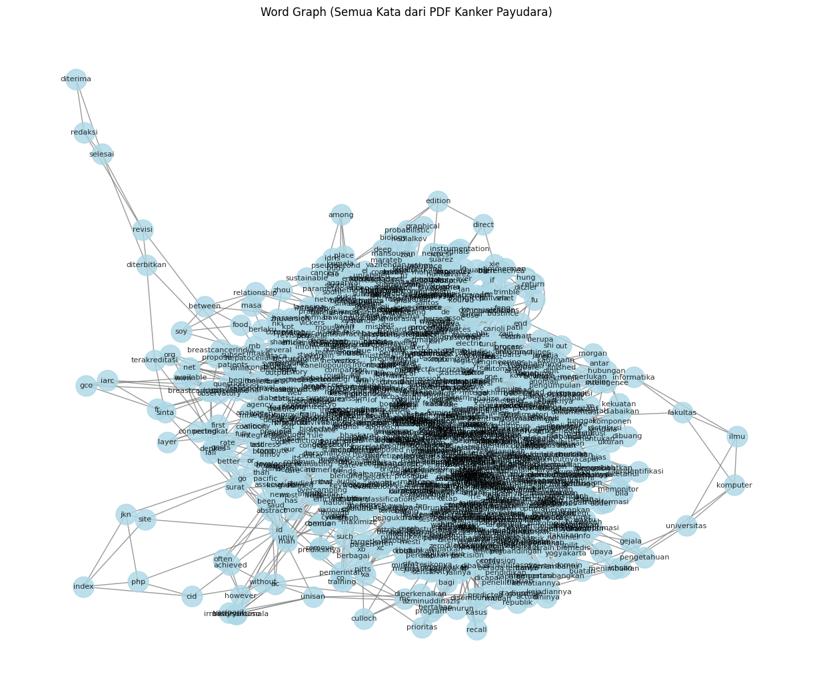

Word Graph#
Installasi pymupdf#
pip install --upgrade pymupdf
Requirement already satisfied: pymupdf in /usr/local/lib/python3.12/dist-packages (1.26.7)
Menghubungkan Drive#
from google.colab import drive
drive.mount('/content/drive')
Drive already mounted at /content/drive; to attempt to forcibly remount, call drive.mount("/content/drive", force_remount=True).
Membaca Paper dan Membuat file txt#
import pymupdf
doc = pymupdf.open("kanker_payudara.pdf") # open a document
out = open("kanker_payudara.txt", "wb") # create a text output
for page in doc: # iterate the document pages
text = page.get_text().encode("utf8") # get plain text (is in UTF-8)
out.write(text) # write text of page
out.write(bytes((12,))) # write page delimiter (form feed 0x0C)
out.close()
Installasi nltk#
!pip install nltk
Requirement already satisfied: nltk in /usr/local/lib/python3.12/dist-packages (3.9.1)
Requirement already satisfied: click in /usr/local/lib/python3.12/dist-packages (from nltk) (8.3.1)
Requirement already satisfied: joblib in /usr/local/lib/python3.12/dist-packages (from nltk) (1.5.2)
Requirement already satisfied: regex>=2021.8.3 in /usr/local/lib/python3.12/dist-packages (from nltk) (2025.11.3)
Requirement already satisfied: tqdm in /usr/local/lib/python3.12/dist-packages (from nltk) (4.67.1)
Installasi Library nltk#
import nltk
nltk.download('punkt') # hanya perlu sekali
nltk.download('punkt_tab') # opsional, untuk versi terbaru NLTK (≥3.8.2)
[nltk_data] Downloading package punkt to /root/nltk_data...
[nltk_data] Package punkt is already up-to-date!
[nltk_data] Downloading package punkt_tab to /root/nltk_data...
[nltk_data] Package punkt_tab is already up-to-date!
True
Membaca file txt#
with open('kanker_payudara.txt', 'r', encoding='utf-8') as file:
teks = file.read()
print(teks[:200]) # tampilkan 200 karakter pertama
Diterima Redaksi : 24-10-2019 | Selesai Revisi : 26-11-2019 | Diterbitkan Online : 10-12-2019
458
Terakreditasi SINTA Peringkat 2
Surat Keputusan Dirjen Penguatan Riset dan Pengembangan Ristek
Membaca kalimat#
# Install: pip install nltk
import nltk
#text = "Ini adalah kalimat pertama. Ini kalimat kedua? Ya!"
all_words = []
sentences = nltk.sent_tokenize(teks)
# Output: ['Ini adalah kalimat pertama.', 'Ini kalimat kedua?', 'Ya!']
Mengubah sekumpulan data (list) menjadi bentuk tabel (DataFrame)#
import pandas as pd
df = pd.DataFrame(sentences, columns=['kalimat'])
print(df)
kalimat
0 Diterima Redaksi : 24-10-2019 | Selesai Revisi...
1 10/E/KPT/2019 \nmasa berlaku mulai Vol.
2 1 No.
3 1 tahun 2017 s.d Vol.
4 5 No.
.. ...
649 Morgan \nKaufmann division of Academic Press, ...
650 [67] E. \nPrasetyo, \nData \nMining: \nKonsep ...
651 Yogyakarta, Indonesia: Andi Offset, \n2012.
652 [68] T. Sutojo, E. Mulyanto, and V. Suhartono,...
653 Yogyakarta, Indonesia: Andi Offset, 2011.
[654 rows x 1 columns]
Import data di atas menjadi csv#
df.to_csv('kalimat.csv', index=False, encoding='utf-8')
Untuk membuat word graph#
Lanjutkan dengan menggunakan https://www.geeksforgeeks.org/nlp/co-occurence-matrix-in-nlp/#
import fitz
import re
import numpy as np
from collections import defaultdict, Counter
def extract_all_words_from_pdf(pdf_path):
doc = fitz.open(pdf_path)
text = ""
for page in doc:
text += page.get_text()
doc.close()
# Bersihkan ringan (JANGAN buang kata penting)
text = re.sub(r'\d+', '', text)
text = re.sub(r'[^\w\s]', ' ', text)
text = text.lower()
# SPLIT LANGSUNG → semua kata muncul
all_words = text.split()
return all_words
all_words = extract_all_words_from_pdf("kanker_payudara.pdf")
window_size = 2
co_occurrences = defaultdict(Counter)
for i, word in enumerate(all_words):
start = max(0, i - window_size)
end = min(len(all_words), i + window_size + 1)
for j in range(start, end):
if i != j:
neighbor = all_words[j]
co_occurrences[word][neighbor] += 1
unique_words = list(co_occurrences.keys())
word_index = {word: idx for idx, word in enumerate(unique_words)}
co_matrix = np.zeros(
(len(unique_words), len(unique_words)),
dtype=int
)
for word, neighbors in co_occurrences.items():
for neighbor, count in neighbors.items():
if neighbor in word_index:
co_matrix[word_index[word]][word_index[neighbor]] = count
import nltk
from nltk.corpus import stopwords
from nltk.tokenize import word_tokenize
from collections import defaultdict, Counter
import numpy as np
import pandas as pd
# Download NLTK resources
nltk.download('punkt')
nltk.download('stopwords')
# Sample text
text = """Kanker Payudara merupakan kanker yang paling sering ditemukan pada wanita dan tingkat kematiannya masih berada pada
posisi dua di antara penyakit kanker laiinya"""
# Preprocess the text
stop_words = set(stopwords.words('english'))
words = word_tokenize(text.lower())
words = [word for word in words if word.isalnum() and word not in stop_words]
# Define the window size for co-occurrence
window_size = 2
# Create a list of co-occurring word pairs
co_occurrences = defaultdict(Counter)
for i, word in enumerate(words):
for j in range(max(0, i - window_size), min(len(words), i + window_size + 1)):
if i != j:
co_occurrences[word][words[j]] += 1
# Create a list of unique words
unique_words = list(set(words))
# Initialize the co-occurrence matrix
co_matrix = np.zeros((len(unique_words), len(unique_words)), dtype=int)
# Populate the co-occurrence matrix
word_index = {word: idx for idx, word in enumerate(unique_words)}
for word, neighbors in co_occurrences.items():
for neighbor, count in neighbors.items():
co_matrix[word_index[word]][word_index[neighbor]] = count
# Create a DataFrame for better readability
co_matrix_df = pd.DataFrame(co_matrix, index=unique_words, columns=unique_words)
# Display the co-occurrence matrix
co_matrix_df
[nltk_data] Downloading package punkt to /root/nltk_data...
[nltk_data] Package punkt is already up-to-date!
[nltk_data] Downloading package stopwords to /root/nltk_data...
[nltk_data] Package stopwords is already up-to-date!
| wanita | laiinya | merupakan | penyakit | dua | dan | yang | kematiannya | ditemukan | masih | berada | tingkat | posisi | paling | antara | kanker | sering | di | payudara | pada | |
|---|---|---|---|---|---|---|---|---|---|---|---|---|---|---|---|---|---|---|---|---|
| wanita | 0 | 0 | 0 | 0 | 0 | 1 | 0 | 0 | 1 | 0 | 0 | 1 | 0 | 0 | 0 | 0 | 0 | 0 | 0 | 1 |
| laiinya | 0 | 0 | 0 | 1 | 0 | 0 | 0 | 0 | 0 | 0 | 0 | 0 | 0 | 0 | 0 | 1 | 0 | 0 | 0 | 0 |
| merupakan | 0 | 0 | 0 | 0 | 0 | 0 | 1 | 0 | 0 | 0 | 0 | 0 | 0 | 0 | 0 | 2 | 0 | 0 | 1 | 0 |
| penyakit | 0 | 1 | 0 | 0 | 0 | 0 | 0 | 0 | 0 | 0 | 0 | 0 | 0 | 0 | 1 | 1 | 0 | 1 | 0 | 0 |
| dua | 0 | 0 | 0 | 0 | 0 | 0 | 0 | 0 | 0 | 0 | 0 | 0 | 1 | 0 | 1 | 0 | 0 | 1 | 0 | 1 |
| dan | 1 | 0 | 0 | 0 | 0 | 0 | 0 | 1 | 0 | 0 | 0 | 1 | 0 | 0 | 0 | 0 | 0 | 0 | 0 | 1 |
| yang | 0 | 0 | 1 | 0 | 0 | 0 | 0 | 0 | 0 | 0 | 0 | 0 | 0 | 1 | 0 | 1 | 1 | 0 | 0 | 0 |
| kematiannya | 0 | 0 | 0 | 0 | 0 | 1 | 0 | 0 | 0 | 1 | 1 | 1 | 0 | 0 | 0 | 0 | 0 | 0 | 0 | 0 |
| ditemukan | 1 | 0 | 0 | 0 | 0 | 0 | 0 | 0 | 0 | 0 | 0 | 0 | 0 | 1 | 0 | 0 | 1 | 0 | 0 | 1 |
| masih | 0 | 0 | 0 | 0 | 0 | 0 | 0 | 1 | 0 | 0 | 1 | 1 | 0 | 0 | 0 | 0 | 0 | 0 | 0 | 1 |
| berada | 0 | 0 | 0 | 0 | 0 | 0 | 0 | 1 | 0 | 1 | 0 | 0 | 1 | 0 | 0 | 0 | 0 | 0 | 0 | 1 |
| tingkat | 1 | 0 | 0 | 0 | 0 | 1 | 0 | 1 | 0 | 1 | 0 | 0 | 0 | 0 | 0 | 0 | 0 | 0 | 0 | 0 |
| posisi | 0 | 0 | 0 | 0 | 1 | 0 | 0 | 0 | 0 | 0 | 1 | 0 | 0 | 0 | 0 | 0 | 0 | 1 | 0 | 1 |
| paling | 0 | 0 | 0 | 0 | 0 | 0 | 1 | 0 | 1 | 0 | 0 | 0 | 0 | 0 | 0 | 1 | 1 | 0 | 0 | 0 |
| antara | 0 | 0 | 0 | 1 | 1 | 0 | 0 | 0 | 0 | 0 | 0 | 0 | 0 | 0 | 0 | 1 | 0 | 1 | 0 | 0 |
| kanker | 0 | 1 | 2 | 1 | 0 | 0 | 1 | 0 | 0 | 0 | 0 | 0 | 0 | 1 | 1 | 0 | 0 | 0 | 2 | 0 |
| sering | 0 | 0 | 0 | 0 | 0 | 0 | 1 | 0 | 1 | 0 | 0 | 0 | 0 | 1 | 0 | 0 | 0 | 0 | 0 | 1 |
| di | 0 | 0 | 0 | 1 | 1 | 0 | 0 | 0 | 0 | 0 | 0 | 0 | 1 | 0 | 1 | 0 | 0 | 0 | 0 | 0 |
| payudara | 0 | 0 | 1 | 0 | 0 | 0 | 0 | 0 | 0 | 0 | 0 | 0 | 0 | 0 | 0 | 2 | 0 | 0 | 0 | 0 |
| pada | 1 | 0 | 0 | 0 | 1 | 1 | 0 | 0 | 1 | 1 | 1 | 0 | 1 | 0 | 0 | 0 | 1 | 0 | 0 | 0 |
window_size = 2
co_occurrences = defaultdict(Counter)
for i, word in enumerate(all_words):
for j in range(max(0, i - window_size), min(len(all_words), i + window_size + 1)):
if i != j:
co_occurrences[word][all_words[j]] += 1
# Daftar kata unik
unique_words = list(set(all_words))
word_index = {word: idx for idx, word in enumerate(unique_words)}
# Matriks co-occurrence
co_matrix = np.zeros((len(unique_words), len(unique_words)), dtype=int)
for word, neighbors in co_occurrences.items():
for neighbor, count in neighbors.items():
co_matrix[word_index[word]][word_index[neighbor]] = count
pip install networkx
Requirement already satisfied: networkx in /usr/local/lib/python3.12/dist-packages (3.6.1)
import networkx as nx
G = nx.Graph()
for word, neighbors in co_occurrences.items():
for neighbor, weight in neighbors.items():
G.add_edge(word, neighbor, weight=weight)
plt.figure(figsize=(12, 10))
pos = nx.spring_layout(G, seed=42, k=0.5)
nx.draw(
G,
pos,
with_labels=True, # Label = kata
node_size=500,
node_color='lightblue',
font_size=8,
alpha=0.8,
edge_color='gray'
)
plt.title("Word Graph (Semua Kata dari PDF Kanker Payudara)")
plt.show()
